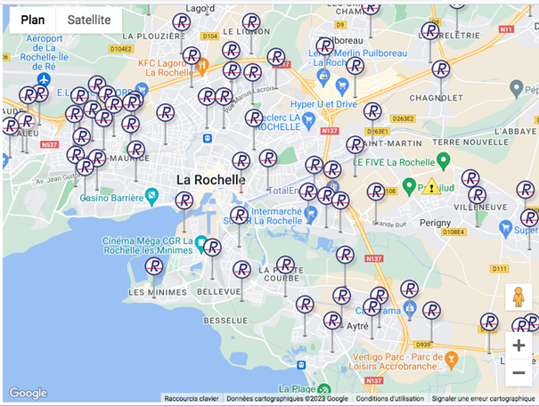
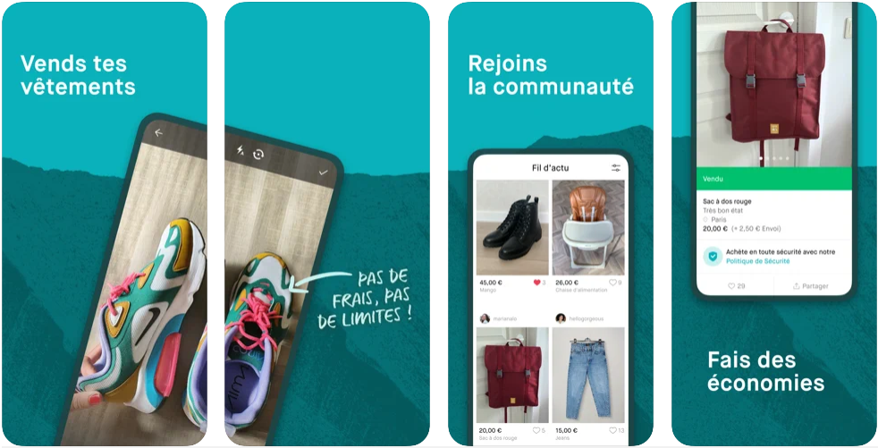

"Réduire, recycler, réutiliser et re-valoriser"
C'est en effet ce que les bornes à vêtements
nous permettent de faire ! Grâce à elles 97% de nos vêtements ou chaussures sont valorisés. Ces textiles sont acheminés
vers 30 centres de collecte et 20 centres de tri. On vous encourage vivement à les utiliser ! Sans bien évidemment s'en servir pour se débarrasser de vieux
vêtements troués et irrécupérables. :)
Voici une carte des principales bornes à vêtements que l'on peut trouver
dans le centre de La Rochelle :

Une autre façon d'être écolo avec ses vêtements reste évidemment la revente et l'achat de seconde main.
Le site Vinted vous le permet
Voici comment se présente l'application Vinted, les instructions sont claires et simples

C'est très simple, prenez en photo l'article que vous souhaitez vendre, puis postez le en y indiquant toutes
les informations utiles comme la taille, la couleur, la marque et hop voilà plus qu'à attendre que le poisson morde !